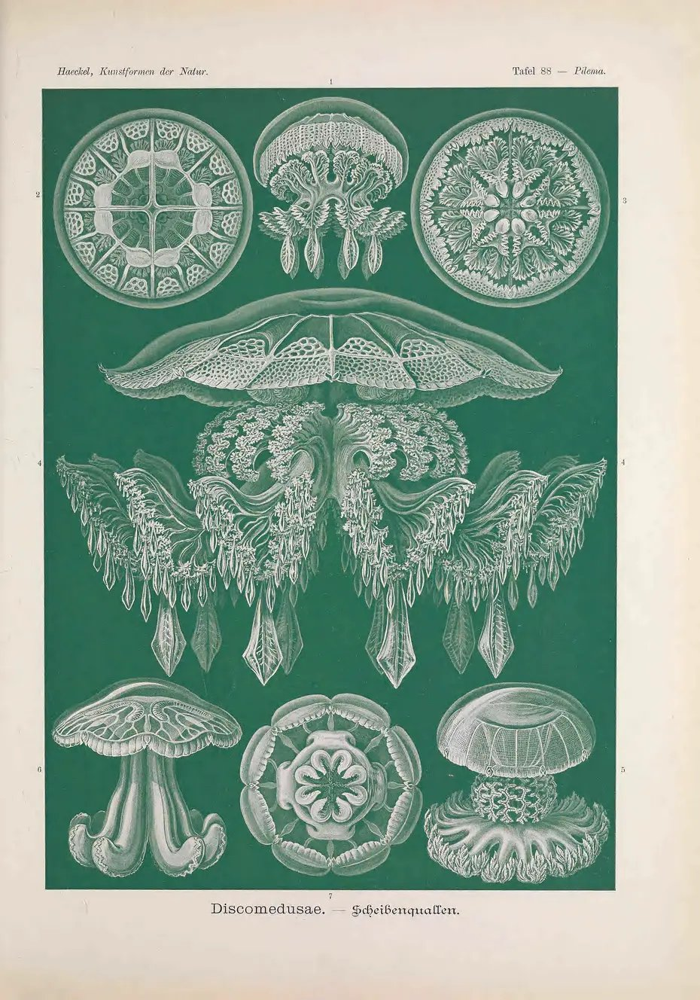

Discomedusae, Plate 88 (Kunstformen der Natur)
Ernst Haeckel & Adolf Giltsch · 1899–1904 · Colour lithograph · Smithsonian Libraries and Archives
Free to use
The large jellyfish in figures 1 to 3 was a new species, seen on 23 February 1901 off the south coast of Sumatra. Haeckel named it Pilema giltschii after Adolf Giltsch, the lithographer who made the plates of this book. The one in figure 4, caught on 10 March 1901 on the equator in the Strait of Malacca, he named after Frida von Uslar-Gleichen.